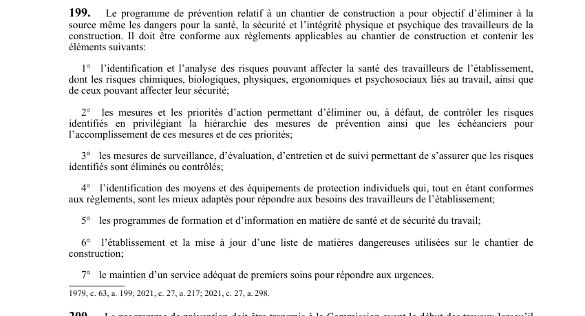

art-199-LSST : contenu programme prévention chantier
Un article du wiki ⚖️ Recueil législatif
🌐 LegisQuébec · 📄 PDF officiel (page 57)
Texte officiel : capture du PDF

Toucher l'image pour l'agrandir🔗 Ouvrir a cette page : LSST.pdf : page 57 · texte a jour au 26 mars 2024
En bref
Le programme de prévention vise à éliminer à la source les dangers pour la santé. Cette obligation vise le maître d'œuvre et les employeurs.
- La sécurité et l'intégrité physique et psychique des travailleurs ; il doit.
- Conforme aux règlements applicables au chantier.
Voir aussi
- art. 197 : avis ouverture fermeture chantier · obligation : au début et à la fin des activités sur un chantier de construction, le maître d'oeuvre doit transmettre à la Commission un avis d'ouverture ou de fermeture du chantier dans les délais et selon les modalités prévus par règlement.
- art. 198 : programme prévention chantier dix travailleurs · obligation : lorsque les activités sur un chantier occuperont simultanément au moins dix travailleurs à un moment des travaux, le maître d'oeuvre doit faire élaborer conjointement avec les employeurs un programme de prévention avant le début des travaux.
- art. 200 : transmission programme Commission vingt travailleurs · obligation : lorsqu'il est prévu que les activités sur un chantier occuperont simultanément au moins 20 travailleurs de la construction, le programme de prévention doit être transmis à la Commission avant le début des travaux.
- art. 201 : modification programme Commission · faculté : la Commission peut ordonner que le contenu d'un programme de prévention soit modifié ou qu'un nouveau programme lui soit soumis dans le délai qu'elle détermine.
- 🔧 Modifié par : LMRSST · Article modificateur de la LMRSST.
- ↑ Loi : LSST
Pages qui pointent ici (7)
- art-197-LSST : avis ouverture fermeture chantier Recueil législatif
- art-198-LSST : programme prévention chantier dix travailleurs Recueil législatif
- art-200-LSST : transmission programme Commission vingt travailleurs Recueil législatif
- art-201-LSST : modification programme Commission Recueil législatif
- art-217-LMRSST : modifie l'art. 199 LSST Recueil législatif
- LSST : Chapitre VII : Inspecteur de la CNESST et révision Recueil législatif
- LSST, droits et obligations Droit du travail